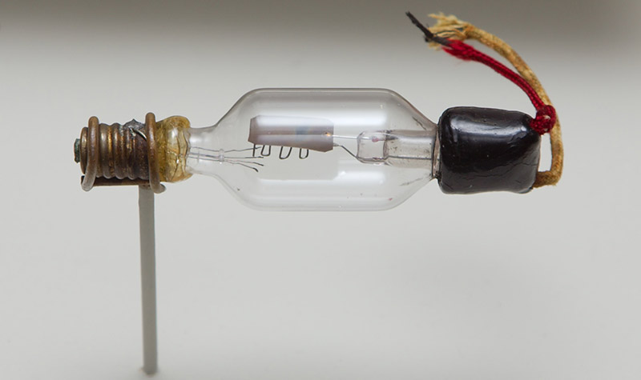

La véritable naissance de l’électronique appliquée, fut la réalisation par l’Américain L. de Forest de la triode ou « audion ».
En ajoutant en 1906 une simple grille à la diode de Fleming (1904), L. de Forest ouvrit un large champ de nouvelles potentialités.
La triode devient la base de l’électronique de la première moitié du xxe siècle à mesure que l’on découvre ses propriétés.
Elle peut détecter et émettre les ondes radio, les modules, et surtout permet l’amplification des signaux.
AT&T est d’ailleurs la première entreprise à l’utiliser à grande échelle après avoir racheté les droits de ses brevets à De Forest.
Invention du premier ordinateur entièrement électronique, l’ENIAC, conçu par l’armée américaine pour calculer la trajectoire des tirs d’artillerie. Pesant 30 tonnes, de la taille d’une grande pièce, il utilisait 19 000 lampes.
Alors que l’ENIAC n’était programmable que manuellement, l’EDVAC permet la mémorisation. C’est une réelle innovation en 1946, puisqu’il permet de mémoriser 1024 mots en mémoire centrale et 20 000 en mémoire magnétique. L’apparition du transistor en 1948 révolutionne l’informatique, permettant ainsi de fabriquer des ordinateurs moins encombrants et qui consomment moins d’électricité.
invention du premier transistor dans les laboratoires Bell par les Américains John Bardeen, William Shockley et Walter Brattain qui ont reçu le prix Nobel de physique en 1956. Il est dix fois plus petit que les lampes.